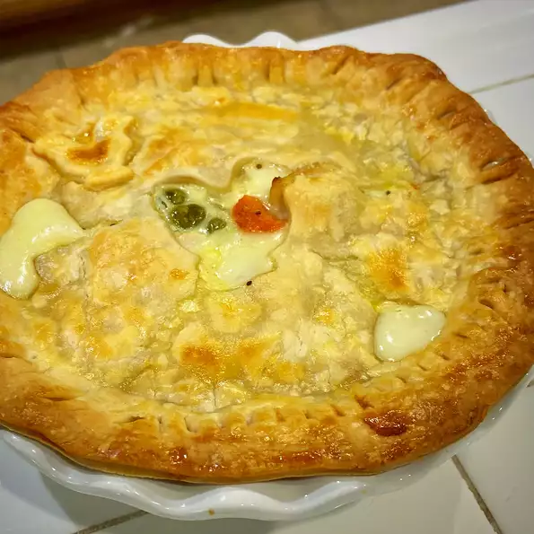

Chicken Pot Pie

Description
Every home cook needs a good chicken pot pie recipe in their repertoire. On the hunt for a new family favorite? You're in luck! This homemade chicken pot pie definitely deserves a permanent spot in your recipe box.
Ingredients
- 1 pound skinless, boneless chicken breast halves - cubed
- 1 cups sliced carrots
- 1 cups frozen green peas
- ½ cup sliced celery
- ¼ cup and 1 tablespoon and 1 teaspoons butter
- ¼ cup and 1 tablespoon and 1 teaspoons chopped onion
- ¼ cup and 1 tablespoon and 1 teaspoons all-purpose flour
- ½ teaspoon salt
- ¼ teaspoon black pepper
- ¼ teaspoon celery seed
- 1 ¾ cups chicken broth
- ⅔ cup milk
- 2 (9 inch) unbaked pie crusts
Steps
- Preheat the oven to 425 degrees F (220 degrees C.).
- Combine chicken, carrots, peas, and celery in a saucepan; add water to cover and bring to a boil.
- Boil for 15 minutes, then remove from the heat and drain.
- While the chicken is cooking, melt butter in another saucepan over medium heat.
- Add onion and cook until soft and translucent, 5 to 7 minutes.
- Stir in flour, salt, pepper, and celery seed. Slowly stir in chicken broth and milk.
- Reduce heat to medium-low and simmer until thick, 5 to 10 minutes.
- Remove from heat and set aside.
- Place chicken and vegetables in the bottom pie crust.
- Pour hot liquid mixture over top. Cover with top crust, seal the edges, and cut away any excess dough.
- Make several small slits in the top crust to allow steam to escape.
- Bake in the preheated oven until pastry is golden brown and filling is bubbly, 30 to 35 minutes.
- Cool for 10 minutes before serving.
Return to Main Page